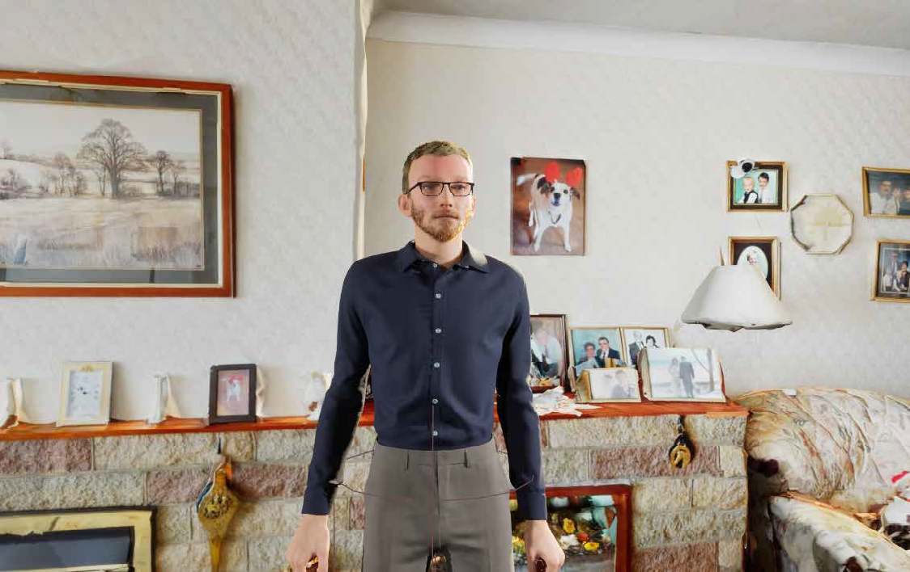
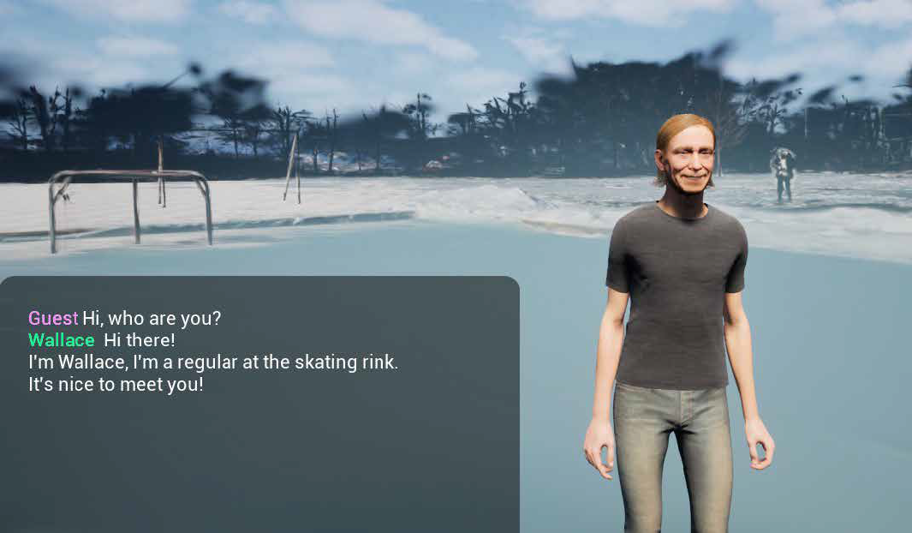
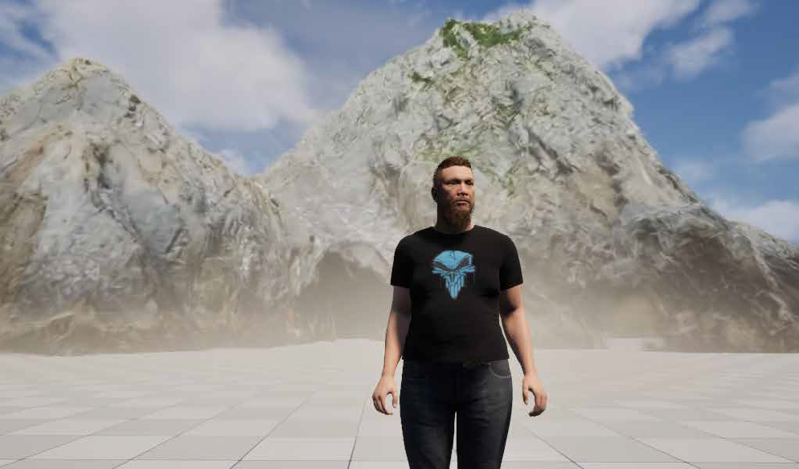

Academic co-op
VR AI Experience
A real home, rebuilt in VR for someone living with dementia, with an AI version of her grandson waiting inside to talk.



How the pieces fit
Gaussian-splat scans of the home, a MetaHuman of Jonathan, Convai conversation primed with his grandmother's memories and an ElevenLabs clone of his voice all come together in Unreal Engine, packaged as an app for a Meta Quest headset where you walk the house and talk to him.
How it started
While I was looking for a co-op at Humber, Jonathan Parker, a professor visiting from Wales, was in town with his students, researching AI and Gaussian Splatting. I went up and talked to him. He had an idea he wanted to build: an experience for people living with dementia, starting with his own grandmother.
It ended up being the two of us. Jonathan brought the research and the scans. I built it.
What I built
- The house. Jonathan gave me Gaussian Splatting scans of his grandmother's home and her hometown. I assembled them in Unreal Engine into a space you can actually walk through, close to photoreal because it's made from the real place.
- Jonathan. I photographed his face and rebuilt him as a MetaHuman, a realistic digital person, so the one waiting in the house would be her grandson.
- His mind, for this one subject. Using Convai, a conversational AI plugin for Unreal, we gave the avatar the context of his grandmother's memories: her home, her town, her stories.
- His voice. With ElevenLabs, we cloned his voice from a recording, so the avatar answers in it.
- The headset. I put it all together and packaged it as an app that runs on a Meta Quest.
Inside the headset
You put it on and you're standing in her house, an almost exact copy of the scan. Walk through it and you find Jonathan. Say anything out loud, through the headset's microphone, and he answers you in his own voice, about his hometown and his grandmother's house, as if he were really there.
The point was never the technology. It was to hand someone a familiar place and a familiar face, and let the memories come back on their own.
The hardest part
Not the AI, and not the scans. Getting all of it into one file a Meta Quest would actually run. Gaussian splats, a MetaHuman, live conversation and voice are heavy on their own, and together they kept breaking the build. It took weeks of troubleshooting before it finally ran on the headset.
Looking back
Jonathan thought it was brilliant, and it's one of the things I'm proudest of. My regret is that I kept it quiet. I didn't publish it, share the process or put the workflow out into the world, and I think it was genuinely new.
We talked about turning the workflow into more experiences like this one, for more people and more places. I'd work with him again in a heartbeat. This page is me finally showing it.